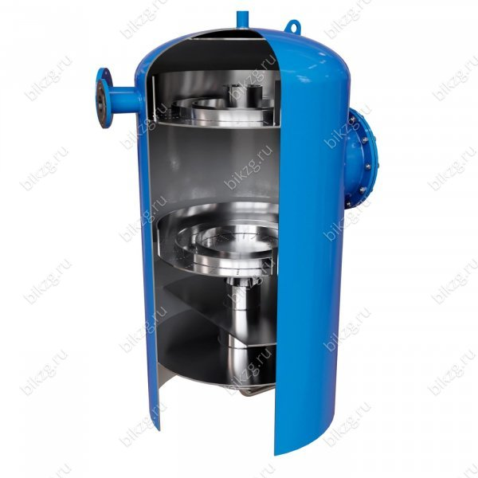

@@include('./templates-parts/header.html')
<section class="questionnaire-page">
   <div class="questionnaire-page__container">
      <h1 class="post-page__title">Опросный лист на колонку деаэрационную атмосферную</h1>
      <p class="questionnaire__subtitle">
         В данном разделе Вы можете заполнить опросный лист онлайн через форму ниже.
      </p>
      <div class="questionnaire__content">
         <div class="questionnaire__form">
            <script src="https://forms.yandex.ru/_static/embed.js"></script><iframe class="questionnaire__iframe"
               src="https://forms.yandex.ru/u/65db4d2443f74febd8ecbf1c/?iframe=1" frameborder="0"
               name="ya-form-65db4d2443f74febd8ecbf1c"></iframe>
         </div>
         
      </div>
   </div>
</section>
@@include('./templates-parts/footer.html')